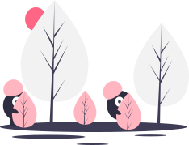

<ion-content [fullscreen]="true">

  <!-- HEADER START -->
  <ion-grid>
      <!-- row-01 -->
      <ion-row>
        <!-- col-01 -->
        <ion-col size="3">  
            <!-- empty for responsiveness -->
        </ion-col>

        <!-- col-02 for heading and border line -->
        <ion-col size="6">
          <div id="borderLine">
              <p id="headingStyle" class="large-text-color">Feeds</p>
          </div>
        </ion-col>

        <!-- col-03 for Setting-icon -->
        <ion-col size="3"> 
          <div id="setting-icon">
              <ion-icon src="../../../assets/icon/settings-icon.svg" id="setting-icon"></ion-icon>
          </div>
        </ion-col>
      </ion-row>
  </ion-grid>
  <!-- HEADER END -->


  <!-- CONTENT STARTS -->
  <ion-grid id="grid-not-found">
    <!-- row-01 image -->
    <ion-row>
      <ion-col>
        <div id="not-found-image" class="align-center">
            
        </div>
      </ion-col>
    </ion-row>

    <!-- row-02 image -->
    <ion-row>
      <ion-col size="12">
          <div id="not-found-text" class="align-center">
            <p>Sorry, No feeds available for your <br> prefered category!</p>
          </div>
      </ion-col>
    </ion-row>
  
  </ion-grid>

</ion-content>
